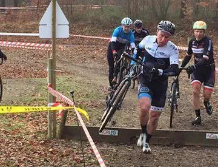
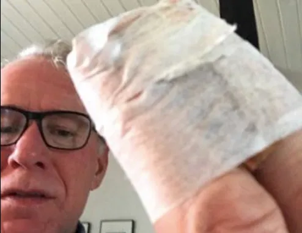

Dramatisk DM i Cykelcross

Kaptajn Bjørnsteen stillede morgenfrisk og i topform op til motionsklassen ved årets DM i Cykelcross. Men blot 200 meter efter start syntes Bjørnsteens ene bremsekolds, at den skulle sætte sig i klemme mellem stellet og fælgen.
Defekten blev hurtigt udbedret, men resulterede i, at kaptajnen nu var godt 300 meter bag bagerste mand i det 36 mand store felt.
Med lige dele indædt vrede og vilje, fik Bjørnsteen dog kæmpet sig op gennem feltet – og sluttede på en 17. plads.

Senere var det Jens Langergaards tur. Jens, der var udlejet til Hellerup Cykelklub for en kasse Leffe, var dog endnu mere uheldig.

Jens havde et par uheldige styrt på den spejlglatte rute – som kom til at koste to forstuvede fingre og en bulden albue. Men Jens er en kriger – og han fuldførte naturligvis.
Quitting is not an option…